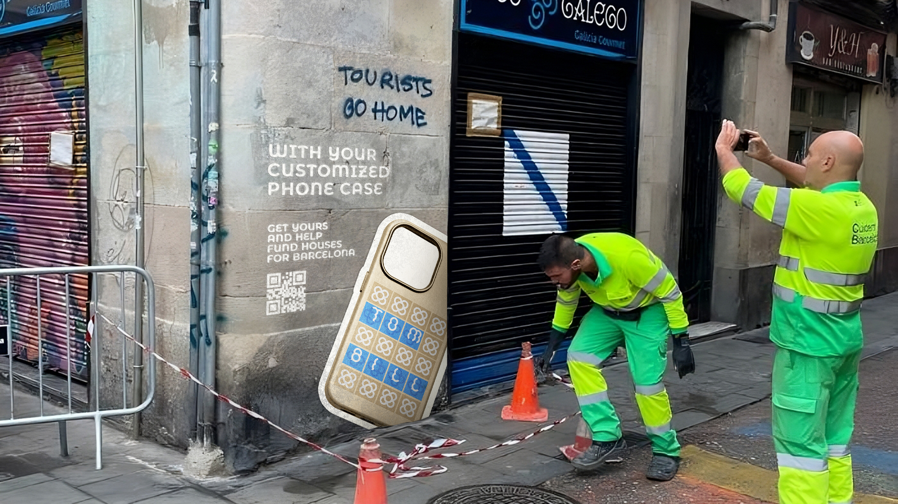
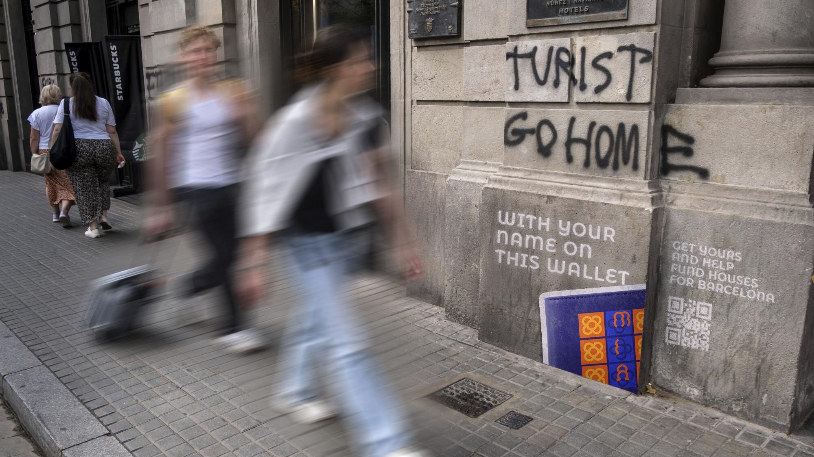
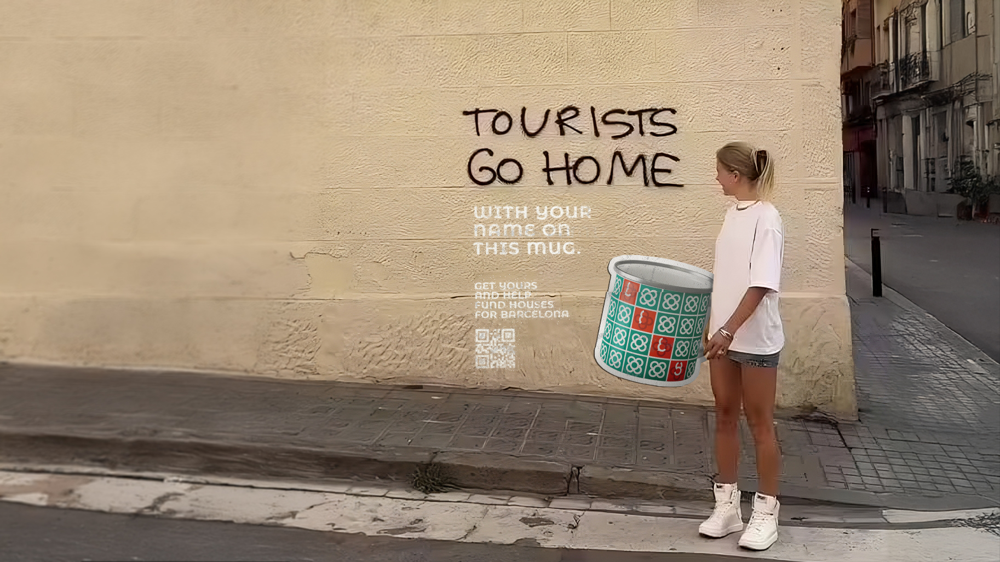
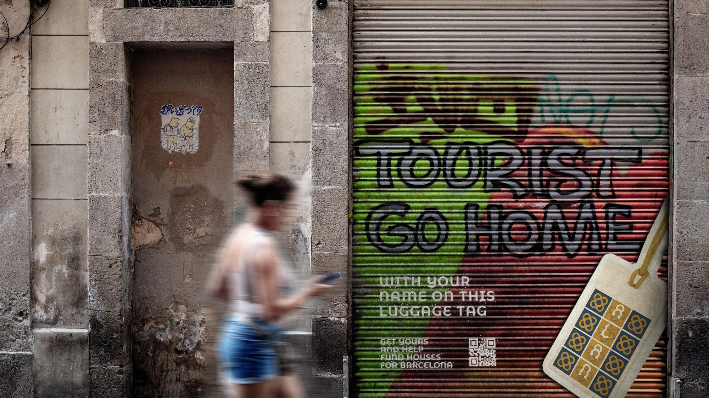

Tourists Go Home

Role
Campaign Designer (Team Project)
Problem
Barcelona's housing crisis, fueled by mass tourism, has left many locals unable to afford a home. This led to extreme protests on the streets, urging for the control on the number of visiting tourists.
Insight
One iconic place of Barcelona, the "Flor de Barcelona" motif, is found everywhere from streets to souvenirs. Since tourists buy these keepsakes, what if Google Fonts turned this motif into a tool for change to support social housing?
Team
Campaign Copywriter: Chieu-Nghi Nguyen My
Campaign Designer: Chung Bui Tri Tin, Nguyen Ngoc Huyen, Nguyen
Minh Hanh, Hoang Thi Ngoc Thao
Idea
"Tourist Go Home" transforms typography into an active force for social good, turning mass tourism into a funding mechanism for local housing. By uniting design, commerce, and activism, the campaign uses letterforms to ensure Barcelona residents are not priced out of their own city. Every purchased letter directly finances social housing initiatives, creating a sustainable loop where visitor demand continually supports the local community.

'Tourists Go Home'
Campaign Idea Board




Process Book